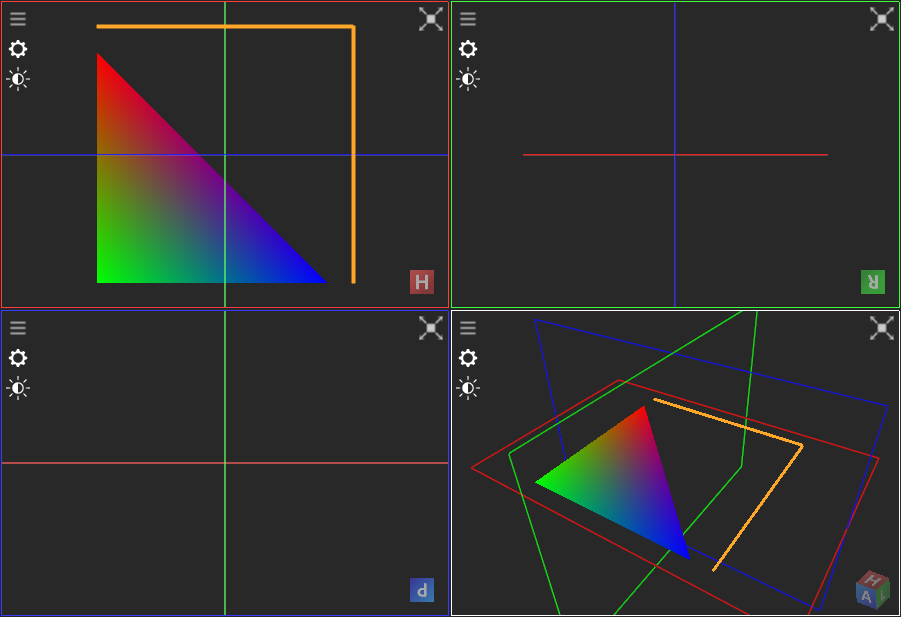

|
ImFusion C++ SDK 4.5.0-rc+43-5d204848
|
|
ImFusion C++ SDK 4.5.0-rc+43-5d204848
|
This tutorial will explain how to render simple primitives using OpenGL and the helper classes of the ImFusionLib.
You will not need an in-depth understanding of how OpenGL works, however basic knowledge is beneficial. A good starting point to learn about OpenGL is https://www.khronos.org/opengl/wiki/.
Before we start diving into code we will have a look at the general building blocks required for rendering something onto the screen:
The most idiomatic way of adding custom rendering into the ImFusionLib View Architecture is to implement a custom GlObject. For this you create a new class inheriting from GlObject. There are three pure virtual member functions that must be implemented.
We want our custom GlObject to only render standard primitives. The GL::FixedFunctionPipeline shader provides all we need for this. Since OpenGL shader creation is expensive, we do not want to create an instance during every render call. Instead we use the caching feature of this class.
If you are using a custom shader that does not provide this caching functionality, you can make the shader a member variable of the class and initialize it in the constructor.
First, we want to render a line in a solid color. We start with defining the vertex coordinates of the line in world space and create a GL::VertexBuffer holding this information on the GPU.
Now we enable the line rendering shader and configure the rendering options. When the shader is completely configured, we issue the draw call on the vertex buffer.
As a second primitive we want to render a filled triangle with rainbow colors. We again start with defining vertex coordinates and per-vertex colors. OpenGL will automatically interpolate per-vertex attributes between the vertices.
Now switch to the default (non-line rendering) shader and issue the draw call
Finally, disable the rendering shader.
This completes our implementation of the MyCustomGlObject::draw() function.
bounds() w.r.t. the above rendering?In order to have a DisplayWidget render our custom GlObject we have to register it with the views where it shall be shown. All views work with the same world coordinate system so that you can assign the same GlObject to multiple views.
The resulting rendering looks like this. Note that both the line and the triangle are infinitesimally slim along the Z axis and therefore only appear in the axial MPR view and in the 3D view.

The full code can be found here:
This tutorial only scratches the surface of what is possible. For a more detailed overview of the rendering interfaces provided by the ImFusion SDK, have a look at the OpenGL Wrapper Library and OpenGL module pages.